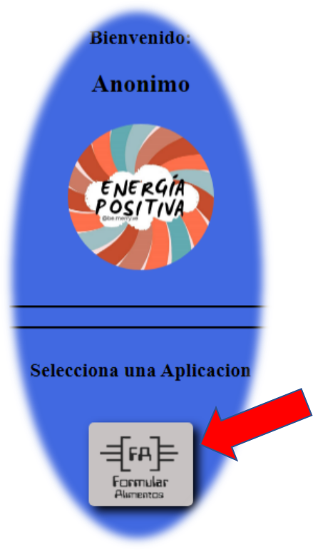
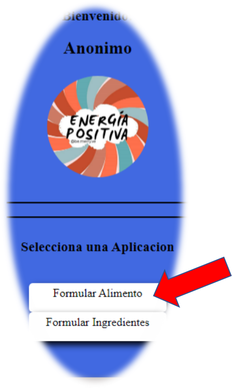
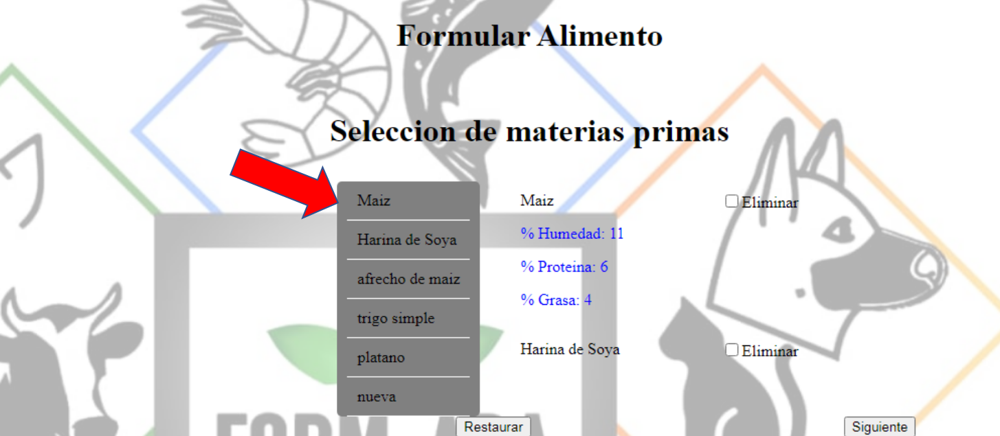
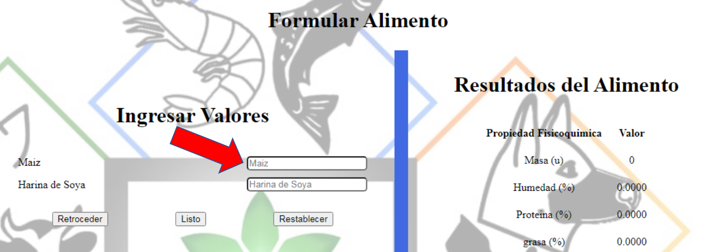
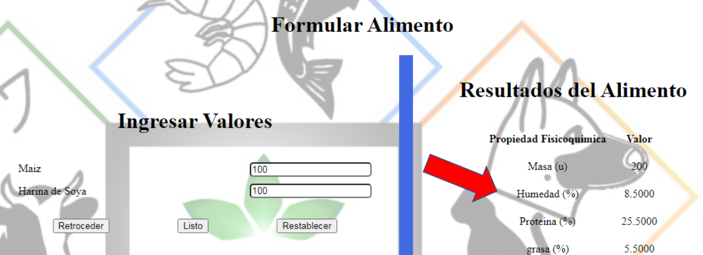

<section class="primerContenedor">
  <article class="segundoContenedor">
    <header><h1>Pasos para Formular un Alimento en la aplicacion</h1></header>
    <nav>
      <button (click)="onAnterior()">Anterior</button><span class="paginas">{{ pagina }} de 5</span>
      <button (click)="onSiguiente()">Siguiente</button>
    </nav>
    <section ngSwitch="{{ pagina }}" class="tercerContenedor">
      <div *ngSwitchCase="1">
        
        <p>
          Para formular un alimento se requiere conocer que ingredientes se
          usaran para elaborarlo y en que proporcion se usara.<br />
          <br />
          Una vez se tenga lo anterior mensionado se procede a ubicar la
          aplicacion del lado izquierdo de la pantalla.
        </p>
      </div>

      <div *ngSwitchCase="2">
        
        <p>Seguido seleccionamos en "Formular Alimento".</p>
      </div>

      <div *ngSwitchCase="3">
        
        <p>
          Ubicados en la pestaña formular, seleccionamos los ingredientes que se
          usaran en la elaboracion del alimento, Notese que este puede ser
          eliminado de la seleccion y que ademas puede visualizar sus
          propiedades.
          <br /><br />
          Luego de la seleccion, se da click en Siguiente.
        </p>
      </div>
      <div *ngSwitchCase="4">
        
        <p>
          En esta pestaña ("formular/alimento"), se ingresa la cantidad masica
          de los ingredeintes.<br /><br />
          Para evitar inconvenientes en el resultado, la unidad de masa (gramos,
          kilogramos, toneladas, etc) debe ser igual en cada uno de los
          ingredientes.<br /><br />
          No esta permitido ingresar valores en negativo, de hacerlo, se
          notificara el error.<br /><br />
          Aquellos valores que no se ingresen, seran tomados iguales a cero.
        </p>
        <ul>
          <li>El boton restablecer, borra los valores ingresados.</li>
          <li>
            El boton Retroceder, regresa la pagina a la seleccion de los
            ingredientes
          </li>
          <li>
            El boton Listo, inicia el calculo de las propiedades
            fisicoqu&iacute;mcias del alimento
          </li>
        </ul>
      </div>

      <div *ngSwitchCase="5">
        
        <p>
          Presionando el boton "Listo" se realiza el calculo del alimento y se
          visualiza el resultado obtenido
        </p>
      </div>
    </section>
  </article>
</section>
